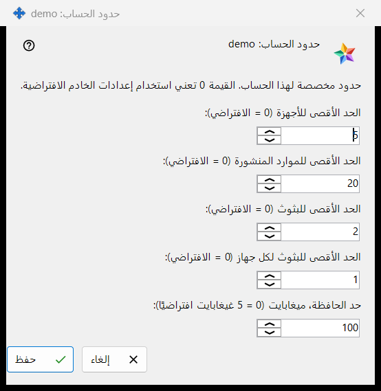
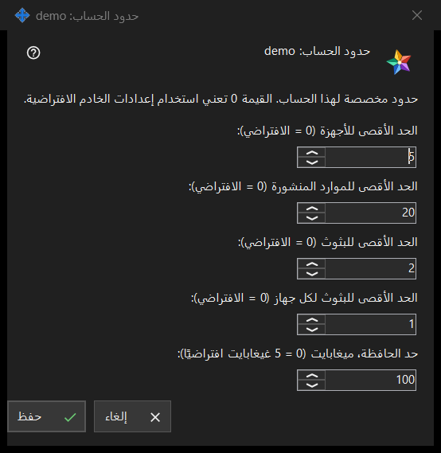

حدود الحساب
الغرض من هذه النافذة
يضبط حدودًا فردية لحساب واحد في Media Exchange Server الذي تشغّله؛ وأي قيمة تُترك 0 تتبع الافتراضي في الخادم. تُفتح النافذة من الزر الحدود.. أسفل قائمة الحسابات في صفحة Media Exchange Server ضمن إعدادات Share Manager، ويظهر هذا الزر بعد تحديد حساب. ويسمّي العنوان الحساب: حدود الحساب: <اسم الدخول>.


بهذا الترتيب
- حدّد الحساب ثم اضغط الزر الحدود..
- اضبط رقمًا لكل حد تريد تغييره، واترك 0 للافتراضي في الخادم.
- اضغط حفظ.
- اقرأ سطر النتيجة: تم حفظ حدود الحساب <اسم الدخول>.
عناصر النافذة
الأجهزة والموارد
الحقل الحد الأقصى للأجهزة (0 = الافتراضي) يحدّد عدد الأجهزة التي يجوز تسجيل دخولها إلى الحساب. والحقل الحد الأقصى للموارد المنشورة (0 = الافتراضي) يحدّد عدد المجلدات المشاركة والموارد الأخرى التي يجوز للحساب نشرها على الخادم.
البثوث
الحقل الحد الأقصى للبثوث (0 = الافتراضي) يحدّد بثوث الحساب كله، والحقل الحد الأقصى للبثوث لكل جهاز (0 = الافتراضي) يحدّد ما يجوز لجهاز واحد منه أن يبدأه.
حد الحافظة
الحقل حد الحافظة، ميغابايت (0 = 5 غيغابايت افتراضيًا) يحدّد أكبر قيمة يستطيع الحساب إرسالها إلى حافظته على الخادم، بالميغابايت الكاملة. أما الحد المخزَّن بوحدات أصغر، مثل 512 كيلوبايت، فيظهر 0 ويحتفظ بحجمه الدقيق ما دمت لا تلمس هذا الحقل.
الحفظ والإلغاء
يستبدل الزر حفظ حدود الحساب كلها دفعة واحدة: كل رقم أكبر من 0 يصبح حدًّا، وكل 0 يعني الافتراضي في الخادم، وخمسة أصفار تزيل تجاوزات الحساب. ولا يغيّر الزر إلغاء شيئًا. وإذا رفض الخادم قيمة يذكر سطر النتيجة السبب، مثل: الحد غير مسموح به: يجب أن يكون رقمًا صحيحًا ضمن النطاق الذي يقبله الخادم.